第 11 章 频域设计
在某一频率范围内改善灵敏度，必然要以另一频率范围内灵敏度恶化为代价；如果被控对象开环不稳定，代价还会更高。无论控制器怎样设计，这一点都成立。
本章继续探索频域技术的使用，重点放在反馈系统设计上。我们先更完整地描述控制系统的性能指标，然后引入环路整形这一概念，把它作为在频域中设计控制器的机制。我们还会介绍时滞、右半平面极点和右半平面零点对系统性能造成的一些基本限制。
11.1 灵敏度函数
上一章讨论了如何使用比例积分微分反馈，也就是 PID 反馈，为给定过程设计反馈控制器。本章把这种方法扩展到更丰富的工具集，用来塑造闭环系统的频率响应。
本章的关键思想之一是，我们可以通过关注开环传递函数来设计闭环系统行为。研究奈奎斯特判据时已经使用了同样的思路：我们画出开环传递函数的奈奎斯特图，从而判断闭环系统的稳定性。从设计角度看，环路分析工具很有力。由于环路传递函数为 \(L=PC\)，如果能用 \(L\) 的性质描述期望性能，就可以直接看出改变控制器 \(C\) 的影响。这比直接推断闭环系统的跟踪响应容易得多，因为闭环跟踪传递函数为
我们先研究反馈回路的一些关键性质。图 11.1 给出一个基本反馈回路的框图。系统回路由两个部分组成：过程和控制器。控制器本身包含两个模块：反馈模块 \(C\) 和前馈模块 \(F\)。作用于过程的扰动有两个：负载扰动 \(d\) 和测量噪声 \(n\)。负载扰动表示把过程从期望行为中推开的扰动；测量噪声表示传感器给出的过程信息受到污染。图中假设负载扰动作用在过程输入端。这是一种简化，因为扰动常常会以多种方式进入过程，但这个假设可以让表述更清晰，同时不明显损失一般性。
过程输出 \(\eta\) 是我们真正想控制的变量。控制基于测量信号 \(y\)，而测量值受到测量噪声 \(n\) 污染。控制器通过控制变量 \(u\) 影响过程。因此，过程有三个输入：控制变量 \(u\)、负载扰动 \(d\) 和测量噪声 \(n\)，以及一个输出：测量信号 \(y\)。控制器有两个输入和一个输出。输入是测量信号 \(y\) 和参考信号 \(r\)，输出是控制信号 \(u\)。注意，控制信号 \(u\) 既是过程输入，也是控制器输出；测量信号 \(y\) 既是过程输出，也是控制器输入。
图 11.1 中的反馈回路受三个外部信号影响：参考信号 \(r\)、负载扰动 \(d\) 和测量噪声 \(n\)。根据具体应用，其他任何信号都可能是控制器设计中关心的信号。由于系统是线性的，输入与感兴趣信号之间的关系可以用传递函数表示。由图 11.1 的框图可得
这里 \(\nu=Fr-y\) 是进入反馈模块的信号，\(e=r-y\) 是测量误差。另外，还可以写出参考信号 \(r\) 与过程输出 \(\eta\) 之间误差的传递函数。这个误差没有在图中显式标出，记为
从这些方程中可以得到几个有意思的结论。首先可以看到，若干传递函数是相同的，大多数关系都由下面六个传递函数给出。我们称它们为六函数组，即原书中的 Gang of Six：
第一列传递函数给出过程输出和控制信号对参考信号的响应。第二列给出控制变量对负载扰动和噪声的响应，最后一列给出过程输出对这两个输入的响应。注意，只需要四个传递函数就能描述系统对负载扰动和测量噪声的反应；为了描述系统对参考信号的响应，还需要另外两个传递函数。
系统的线性行为由式 (11.2) 中的六个传递函数决定，性能指标也可以用这些传递函数表达。特殊情形 \(F=1\) 称为纯误差反馈系统。此时所有控制作用都只基于误差反馈，系统完全由式 (11.2) 右侧四个传递函数刻画，它们有专门名称：
这些传递函数及其对应系统称为四函数组，即原书中的 Gang of Four。负载灵敏度函数有时称为输入灵敏度函数，噪声灵敏度函数有时称为输出灵敏度函数。
这些传递函数有许多有趣性质，本章后面会详细讨论。为了分析和设计反馈系统，深入理解这些性质非常重要。
分析六函数组可以发现，反馈控制器 \(C\) 影响负载扰动和测量噪声的效果。注意，测量噪声通过反馈进入过程。第 12.2 节将说明，控制器还会影响闭环系统对过程变化的灵敏度。控制器中的前馈部分 \(F\) 只影响系统对命令信号的响应。
第 9 章重点研究了环路传递函数，并看到它的性质可以让我们理解系统性质。为了恰当评价一个反馈系统，需要考察六函数组或四函数组中所有传递函数的性质。下面的例子说明了这一点。
例 11.1 环路传递函数只能提供有限洞察
考虑传递函数为
的过程，并用误差反馈 PI 控制器控制，控制器传递函数为
环路传递函数为 \(L=k/s\)，灵敏度函数为
注意，计算环路传递函数时因子 \(s-a\) 被抵消了，并且这个因子也不出现在灵敏度函数或互补灵敏度函数中。然而，如果 \(a>0\)，这种抵消非常严重，因为连接负载扰动与过程输出的传递函数 \(PS\) 此时是不稳定的。特别是，小扰动 \(d\) 就可能导致无界输出，这显然不可取。
图 11.2 给出了反馈系统更一般的表示。过程输入 \(u\) 表示可操纵的控制信号，过程输入 \(w\) 表示影响过程的其他信号。过程输出 \(y\) 是测量变量向量，\(z\) 是其他感兴趣信号。
图 11.1 表示的是一种特殊情形，因为它假设负载扰动进入过程输入端，且测量输出等于过程变量与测量噪声之和。扰动可以通过许多不同方式进入系统，传感器也可能有自身动态。图 11.2 给出了捕捉一般情形的更抽象方式，它只有两个模块，分别表示过程 \(P\) 和控制器 \(C\)。过程有两个输入：控制信号 \(u\) 和扰动向量 \(w\)；有两个输出：测量信号 \(y\) 和用于指定性能的信号向量 \(z\)。图 11.1 的系统可通过选择 \(w=(d,n)\)、\(z=(\eta,\nu,e,\epsilon)\) 来表示。此时过程传递函数 \(P\) 是 \(4\times3\) 矩阵，控制器传递函数 \(C\) 是 \(1\times2\) 矩阵，参见习题 11.3。
多输入多输出过程也可以通过把 \(u\) 和 \(y\) 看作向量来处理。这些更高抽象层级的表示有助于理论发展，因为它们让人可以关注基本问题，并解决具有广泛应用的一般问题。不过，也必须小心保持它们与真实控制问题之间的联系。
11.2 前馈设计
到目前为止，我们的大多数分析和设计工具都聚焦于反馈的作用及其对系统动态的影响。前馈是反馈的一个简单而强大的补充技术。它既可以改善系统对参考信号的响应，也可以减小可测扰动的影响。前馈补偿可以完美消除扰动，但它对过程变化比反馈补偿敏感得多。第 7.5 节已经结合图 7.10 讨论了前馈的一般方案。第 10.5 节也讨论了 PID 控制器中一种简单形式的前馈。图 11.1 中的控制器也有一个前馈模块，用于改善命令信号响应。图 11.3 给出了前馈的另一个版本，本节用它来理解前馈和反馈之间的一些折中。
具有两个自由度，即前馈和反馈的控制器，有一个优点：对参考信号的响应可以独立于扰动衰减和鲁棒性设计。先考虑参考信号响应，因此暂时假设负载扰动 \(d=0\)。令 \(F_m\) 表示系统对参考信号的理想响应。前馈补偿器由传递函数 \(F_u\) 和 \(F_m\) 刻画。当参考信号改变时，传递函数 \(F_u\) 生成信号 \(u_{ff}\)。这个信号被选择为，当它作为过程输入时，会产生期望输出。在理想条件下，输出 \(y\) 等于 \(y_m\)，误差信号为零，因此没有反馈作用。如果存在扰动或建模误差，\(y_m\) 和 \(y\) 会不同，反馈随后试图把误差带回零。
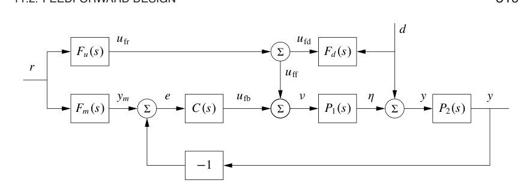
为了作形式分析，计算从参考输入到过程输出的传递函数：
其中 \(P=P_2P_1\)。第一项表示期望传递函数。第二项可以通过两种方式变小：用前馈补偿使 \(PF_u-F_m\) 变小，或者用反馈补偿使 \(1+PC\) 变大。选择
即可得到完美前馈补偿。因此，用传递函数设计前馈是非常简单的任务。注意，前馈补偿器 \(F_u\) 包含过程动态的逆模型。
反馈和前馈有不同性质。前馈作用来自匹配两个传递函数，因此需要精确知道过程动态；反馈则试图通过除以一个很大的量来减小误差。对具有积分作用的控制器而言，低频环路增益很大，因此只需要确保理想前馈条件在较高频率处成立。与要求式 (11.5) 在所有频率都成立相比，这要容易得多。
现在考虑用前馈控制减小图 11.3 中负载扰动 \(d\) 的影响。假设扰动信号可测，且扰动进入过程动态的方式已知，由 \(P_1\) 和 \(P_2\) 刻画。通过把测得扰动信号送入传递函数为 \(F_d\) 的动态系统，可以减小扰动影响。假设参考信号 \(r=0\)，由框图代数可得从扰动到过程输出的传递函数
其中 \(P=P_1P_2\)。可通过使 \(1+F_dP_1\) 变小，也就是前馈，或使 \(1+PC\) 变大，也就是反馈，来减小扰动影响。选择
可得到完美补偿，这要求对传递函数 \(P_1\) 求逆。
与参考跟踪情形一样，扰动衰减可以通过结合反馈和前馈完成。由于低频扰动可由反馈消除，我们只需要对高频扰动使用前馈；此时式 (11.7) 中的传递函数 \(F_d\) 可通过 \(P_1\) 的高频近似来计算。
式 (11.5) 和式 (11.7) 给出了前馈补偿器的解析表达式。为了得到容易实现的传递函数，要求前馈补偿器稳定，并且不需要微分。因此，期望响应 \(F_m\) 的可选形式可能受到限制；如果过程有右半平面零点或时滞，还需要近似。
例 11.2 车辆转向
例 6.4 给出了车辆转向的线性化模型。从转向角 \(\delta\) 到横向偏差 \(y\) 的归一化传递函数为
对变道系统，我们希望得到没有超调的平顺响应，因此选择期望响应为
其中参数 \(a\) 控制转向响应速度或激烈程度。由式 (11.5) 得到
只要 \(\gamma>0\)，这是一个稳定传递函数。图 11.4 显示 \(a=0.5\) 时系统响应。图中可见，车辆大约在 10 个车长内完成变道，转向角变化平滑。最大转向角略大于 0.1 rad，也就是约 \(6^\circ\)。使用缩放变量时，横向偏差曲线 \(y(t)\) 也可以解释为车辆轨迹 \(y(x)\)，此时车长为长度单位。
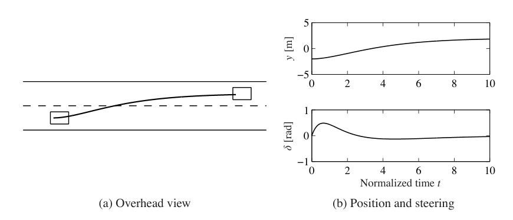
结合反馈和前馈的二自由度控制器有一个主要优点：控制设计问题可以分成两个部分。反馈控制器 \(C\) 可设计为提供良好鲁棒性和有效扰动衰减；前馈部分可独立设计，用于获得期望的命令信号响应。
11.3 性能指标
控制设计过程中的关键问题，是如何指定系统的期望性能。用户理解性能指标也很重要，因为他们需要知道应该提出什么要求，以及如何测试系统。指标通常根据对过程变化的鲁棒性、对参考信号和扰动的响应来给出，可以用时域响应表示，也可以用频域响应表示。第 5.3 节图 5.9 和第 6.3 节给出了参考信号阶跃响应的指标。第 9.3 节给出了基于频域概念的鲁棒性指标，第 12 章会进一步讨论。前面讨论的指标主要基于环路传递函数。由于第 11.1 节已经看到，单个传递函数不总能完整刻画闭环性质，本节将基于完整的六函数组更全面地讨论性能指标。
传递函数很好地刻画了系统的线性行为。为了给出指标，通常希望用少数参数捕捉系统特征。时域响应的常见特征包括超调、上升时间和调节时间，如图 5.9 所示。频率响应的常见特征包括共振峰、峰值频率、增益交越频率和带宽。共振峰是增益的最大值，峰值频率是对应频率。增益交越频率是开环增益等于 1 的频率。带宽定义为闭环增益不低于低频增益、带通系统中频增益或高通系统高频增益的 \(1/\sqrt2\) 的频率范围。时域和频域指标之间存在有趣关系。粗略说，短时间内的时域响应行为与高频处的频率响应行为有关，反之亦然。精确关系并不容易推导。
对参考信号的响应
考虑图 11.1 中的基本反馈回路。参考信号响应由传递函数
描述。对误差反馈系统，\(F=1\)。注意，同时考虑输出响应和控制信号响应很有用。尤其是，控制信号响应可以帮助判断获得某个输出响应所需控制信号的大小和变化速率。
例 11.3 三阶系统
考虑过程传递函数
以及误差反馈 PI 控制器，其增益为 \(k_p=0.6\)、\(k_i=0.5\)。图 11.5 显示了系统响应。实线为误差反馈 PI 控制器结果。虚线为带前馈的控制器结果，其中前馈设计使
从时域响应看，带前馈的控制器给出更快响应，而且没有超调。不过，要得到这种快速响应，需要大得多的控制信号。控制信号最大值为 8，而普通 PI 控制器只有 1.2。带前馈控制器具有更大带宽，且没有共振峰。传递函数 \(G_{ur}\) 在高频处也有更高增益。
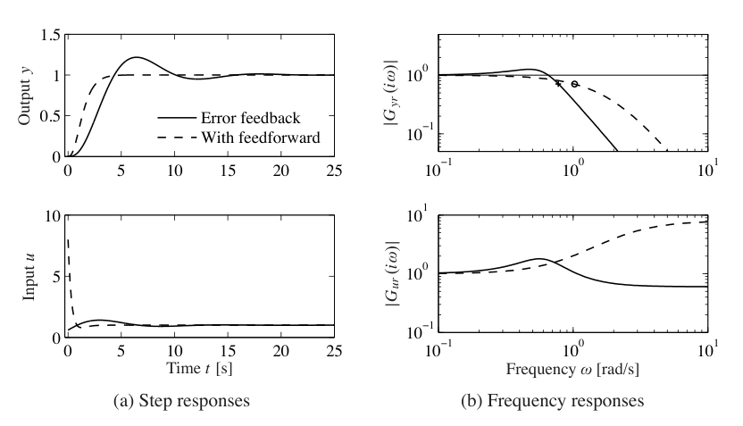
对负载扰动和测量噪声的响应
扰动衰减的一个简单判据，是把图 11.1 中闭环系统输出与对应开环系统输出比较，后者通过令 \(C=0\) 得到。如果开环和闭环系统受到相同扰动，则闭环输出可通过让开环输出经过传递函数 \(S\) 得到。灵敏度函数说明输出变化怎样受反馈影响，见习题 11.7。满足 \(|S(i\omega)|<1\) 的频率处，扰动被衰减；满足 \(|S(i\omega)|>1\) 的频率处，扰动被反馈放大。最大灵敏度 \(M_s\) 发生在某个频率 \(\omega_{sc}\)，因此它衡量扰动可能被放大的最大倍数。\(1/(1+L)\) 的最大幅值也等于 \(|1+L|\) 的最小值，而这正是第 9.3 节定义的稳定裕度 \(s_m\)，所以
因此，最大灵敏度也是鲁棒性指标。
如果已知灵敏度函数，就可以通过记录一个典型输出，并让它经过灵敏度函数滤波，来评价反馈可能带来的改善。灵敏度函数增益曲线是评估扰动衰减的好方法。由于灵敏度函数只依赖环路传递函数，它的性质也可以用环路传递函数的奈奎斯特图形象表示，如图 11.6 所示。复数 \(1+L(i\omega)\) 可表示为从 \(-1\) 点到奈奎斯特曲线上 \(L(i\omega)\) 点的向量。因此，所有位于以 \(-1\) 为圆心、半径为 1 的圆外的点，其灵敏度小于 1。对应这些频率的扰动会被反馈衰减。
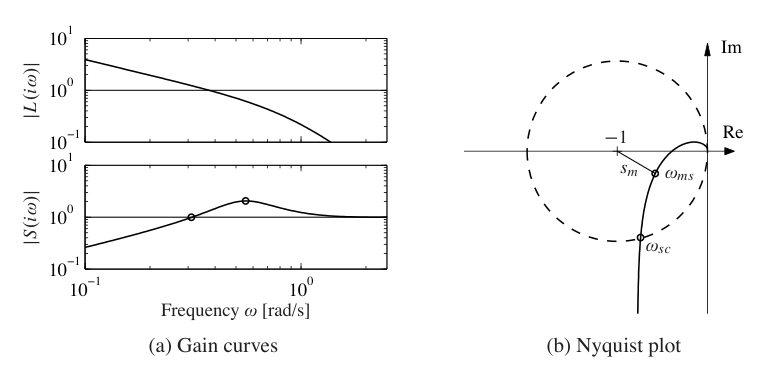
图 11.1 中从负载扰动 \(d\) 到过程输出 \(y\) 的传递函数为
由于负载扰动通常是低频扰动，自然要关注该传递函数的低频行为。对 \(P(0)\ne0\) 且控制器具有积分作用的系统，控制器增益在低频处趋于无穷大，因此当 \(s\) 很小时有近似
其中 \(k_i\) 为积分增益。由于灵敏度函数 \(S\) 在高频时趋于 1，高频处有近似 \(G_{yd}\approx P\)。
测量噪声通常具有高频成分，它会在控制变量中产生快速变化。这些变化有害，因为它们会造成许多执行器磨损，甚至可能使执行器饱和。因此，必须让测量噪声引起的控制信号变化保持在合理水平；典型要求是这种变化只占控制信号量程的一小部分。可以通过滤波和合理设计控制器高频性质来影响这些变化。
测量噪声对控制信号的影响由传递函数
刻画。互补灵敏度函数在低频处接近 1，即 \(\omega<\omega_{gc}\) 时，因此 \(G_{un}\) 可近似为 \(-1/P\)。灵敏度函数在高频处接近 1，即 \(\omega>\omega_{gc}\) 时，因此 \(G_{un}\) 可近似为 \(-C\)。
例 11.4 三阶系统
考虑过程传递函数 \(P(s)=(s+1)^{-3}\)，以及 PID 控制器，其增益为 \(k_p=0.6\)、\(k_i=0.5\)、\(k_d=2.0\)。我们给控制器加上二阶噪声滤波器，取 \(T_f=0.1\)，使其传递函数为
图 11.7 给出了系统响应。图 11.7a 上方显示输出对负载扰动阶跃的响应，在 \(t=2.73\) 时峰值为 0.28。图 11.7a 的频率响应显示，增益在 \(\omega=0.7\) 处取得最大值 0.58。
图 11.7b 显示控制信号对测量噪声阶跃的响应。传递函数 \(G_{un}(i\omega)\) 的高频滚降来自滤波；如果没有滤波，图 11.7b 中的增益曲线会在 20 rad/s 之后继续上升。阶跃响应在 \(t=0.08\) 处达到峰值 13。频率响应在 \(\omega=14\) 处取得峰值 20。注意，这个峰值频率远高于负载扰动响应峰值，也远高于增益交越频率 \(\omega_{gc}=0.78\)。习题 11.9 中推导的近似给出
且峰值发生在
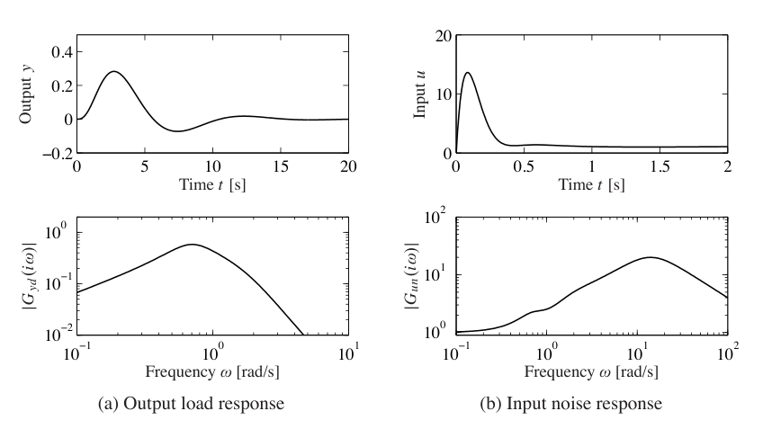
11.4 通过环路整形进行反馈设计
奈奎斯特稳定性定理的一个优点是，它基于环路传递函数，而环路传递函数与控制器传递函数通过 \(L=PC\) 相联系。因此，很容易看出控制器怎样影响环路传递函数。为了让不稳定系统稳定，只需把奈奎斯特曲线弯离临界点。
这个简单思想是一系列设计方法的基础，这些方法统称为环路整形。它们的核心是选择一个补偿器，使环路传递函数具有期望形状。一种做法是先确定一个能给闭环系统带来期望性质的环路传递函数，然后计算控制器 \(C=L/P\)。另一种做法是从过程传递函数出发，改变其增益，并加入极点和零点，直到得到期望形状。本节将探索不同环路整形方法如何用于控制律设计。
设计考虑
先讨论什么样的环路传递函数形状能给出良好性能和良好稳定裕度。图 11.8 显示一个典型环路传递函数。良好鲁棒性要求良好的稳定裕度，或者良好的增益裕度和相位裕度，这会对交越频率 \(\omega_{pc}\) 和 \(\omega_{gc}\) 附近的环路传递函数提出要求。为了很好跟踪命令信号并衰减低频扰动，\(L\) 在低频处的增益必须很大。由于 \(S=1/(1+L)\)，当 \(|L|>100\) 时，扰动会被衰减 100 倍，跟踪误差小于 1%。因此，希望交越频率大，且增益曲线具有较陡的负斜率。低频增益可通过带积分作用的控制器提高，这也称为滞后补偿。为了避免向系统注入过多测量噪声，环路传递函数在高频处应具有低增益，这称为高频滚降。增益交越频率的选择，是负载扰动衰减、测量噪声注入和鲁棒性之间的折中。
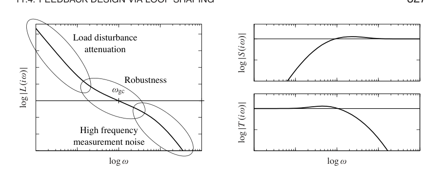
伯德关系，见第 9.4 节，对环路传递函数的形状施加限制。式 (9.8) 表明，增益交越处的增益曲线斜率不能太陡。如果增益曲线具有常数斜率，则斜率 \(n_{gc}\) 与相位裕度 \(\phi_m\) 之间满足近似关系
当增益曲线没有明显偏离直线时，这个公式是合理近似。由式 (11.11) 可知，相位裕度 \(30^\circ\)、\(45^\circ\)、\(60^\circ\) 分别对应斜率 \(-5/3\)、\(-3/2\)、\(-4/3\)。
环路整形是一个试错过程。通常从过程传递函数的伯德图开始，然后通过改变控制器增益，并向控制器传递函数中加入极点和零点，来塑造环路传递函数。每个控制器都要根据不同性能指标进行评价，并通过调节控制器参数和复杂度，在许多相互冲突的要求之间折中。环路整形很容易用于单输入单输出系统。对一个输入多个输出的系统，也可以从最内层回路开始，逐个闭合回路。对于最小相位系统，唯一限制是为了得到快速响应的闭环系统，可能需要很大的相位超前和很高控制器增益。已有许多具体步骤可用，它们都需要经验，但也能很好揭示相互冲突的要求。非最小相位系统存在可实现性能的基本限制，下一节会讨论。
超前与滞后补偿
进行环路整形的一种简单方法，是从过程传递函数出发，加入传递函数为
的简单补偿器。当 \(a<b\) 时，补偿器称为超前补偿器；当 \(a>b\) 时，称为滞后补偿器。PI 控制器是 \(b=0\) 的滞后补偿器特例，理想 PD 控制器是 \(a=0\) 的超前补偿器特例。图 11.9 给出了超前和滞后补偿器的伯德图。滞后补偿增加低频增益，通常用于改善低频跟踪性能和扰动衰减。也可以为特定扰动设计专门补偿器，见习题 11.10。超前补偿通常用于改善相位裕度。下面给出例子。
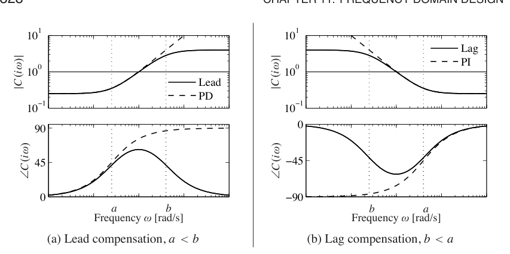
例 11.5 轻敲模式原子力显微镜
习题 9.2 给出了原子力显微镜轻敲模式中垂直运动动态的一个简单模型。系统动态传递函数为
其中 \(a=\zeta\omega_0\)、\(\tau=2\pi n/\omega_0\)，增益已经归一化为 1。参数 \(a=1\)、\(\tau=0.25\) 时，这个传递函数的伯德图在图 11.10a 中以虚线表示。为了改善负载扰动衰减，我们通过引入积分控制器增加低频增益。此时环路传递函数为 \(L=k_iP(s)/s\)，并调节增益使相位裕度为零，得到 \(k_i=8.3\)。注意低频增益增加了。图 11.10a 中点线显示对应 伯德图，临界点用圆圈标出。为了改善相位裕度，引入比例作用，并逐渐增加比例增益 \(k_p\)，直到得到合理的灵敏度值。取 \(k_p=3.5\) 时，最大灵敏度 \(M_s=1.6\)，最大互补灵敏度 \(M_t=1.3\)。环路传递函数在图 11.10a 中以实线表示。与纯积分控制器相比，注意相位裕度显著增加。
为了评价设计，还计算四函数组中传递函数的增益曲线，如图 11.10b 所示。灵敏度曲线峰值合理，\(PS\) 图显示 \(PS\) 最大值为 0.3，这意味着负载扰动得到良好衰减。\(CS\) 图显示最大控制器增益为 6。控制器在高频处增益为 3.5，因此可以考虑加入高频滚降。
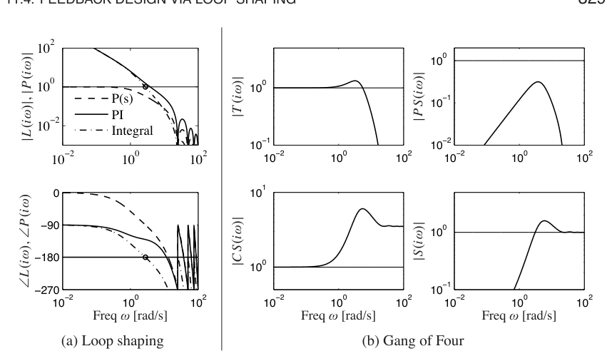
反馈系统设计中的一个常见问题是相位裕度太小，因此必须向系统加入相位超前。如果在式 (11.12) 中取 \(a<b\)，就会在极点零点对之间的频率范围内加入相位超前，并大约向两侧各延伸一个十倍频程。通过适当选择相位超前的位置，就可以在增益交越频率处提供额外相位裕度。
由于传递函数相位与幅值斜率相关，提高相位要求在应用超前补偿的频率范围内提高环路传递函数增益。习题 11.11 说明，所需增益会随相位超前量指数增长。也可以把超前补偿器看作改变传递函数斜率，从而在交越区域塑造环路传递函数，尽管它也可以用于其他频率区域。
例 11.6 矢量推力飞机的滚转控制
考虑图 11.11 所示矢量推力飞机的滚转控制。根据习题 8.10，把系统建模为二阶传递函数
参数见图 11.11b。性能指标要求稳态误差小于 1%，并且到 10 rad/s 为止跟踪误差小于 10%。
图 11.12a 显示开环传递函数。为了达到性能指标，希望在频率 10 rad/s 处至少有 10 的增益，这要求增益交越频率位于更高频率。由环路形状可见，为了达到期望性能，不能简单增加增益，因为那会导致很低的相位裕度。必须在期望交越频率处提高相位。
为此，使用式 (11.12) 的超前补偿器，取 \(a=2\)、\(b=50\)。然后设定系统增益，使直到期望带宽处都有较大环路增益，如图 11.12b 所示。可以看到，该系统在 10 rad/s 以下所有频率处增益都大于 10，并且相位裕度超过 \(60^\circ\)。
超前补偿器的作用本质上与 PID 控制器中的微分部分相同。如第 10.5 节所述，PID 控制器的微分作用通常使用滤波器来限制高频增益。超前补偿器也通过 \(s=b\) 处的极点表现出同样效果。
式 (11.12) 是一阶补偿器，最多能提供 \(90^\circ\) 相位超前。更大的相位超前可通过高阶超前补偿器得到，见习题 11.11：
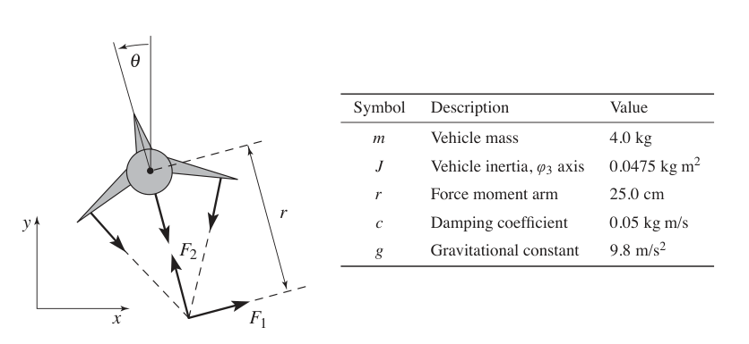
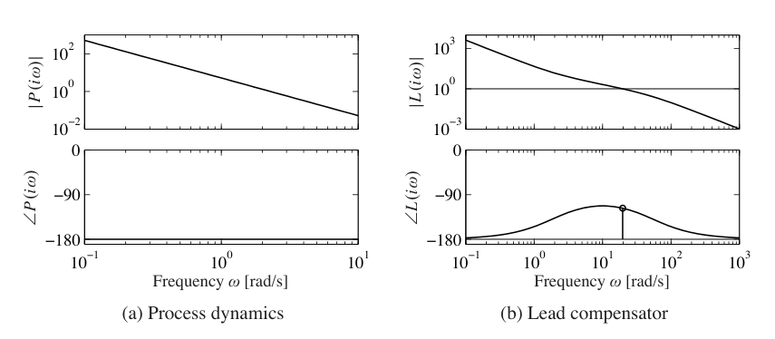
11.5 基本限制
虽然环路整形为设计系统闭环响应提供了很大灵活性，但可实现的性能仍存在基本限制。这里讨论困难动态可能带来的一些主要性能限制；与鲁棒性相关的其他限制将在下一章讨论。
右半平面极点、零点与时滞
有些线性系统天生难以控制。限制与右半平面极点、右半平面零点和时滞有关。为了研究右半平面极点和零点造成的限制，把过程传递函数分解为
其中 \(P_{mp}\) 是最小相位部分，\(P_{ap}\) 是非最小相位部分。这个分解经过归一化，使 \(|P_{ap}(i\omega)|=1\)，并选择符号使 \(P_{ap}\) 具有负相位。传递函数 \(P_{ap}\) 称为全通系统，因为它在所有频率处都具有单位增益。若要求相位裕度为 \(\phi_m\)，则
其中 \(C\) 是控制器传递函数。令 \(n_{gc}\) 为交越频率处增益曲线斜率。由于 \(|P_{ap}(i\omega)|=1\)，有
假设斜率 \(n_{gc}\) 为负，为了系统稳定，它必须大于 \(-2\)。由伯德关系式 (9.8) 可得
将其与式 (11.14) 结合，可得到增益交越频率处全通部分允许相位滞后的不等式：
这个条件称为增益交越频率不等式。它说明必须选择合适的增益交越频率，使非最小相位成分的相位滞后不要太大。对于鲁棒性要求较高的系统，可以选择 \(60^\circ\) 相位裕度，即 \(\phi_m=\pi/3\)，以及斜率 \(n_{gc}=-1\)，得到允许相位滞后 \(\phi_l=\pi/6=0.52\) rad，即 \(30^\circ\)。对鲁棒性要求较低的系统，可以选择 \(45^\circ\) 相位裕度，即 \(\phi_m=\pi/4\)，以及斜率 \(n_{gc}=-3/2\)，得到允许相位滞后 \(\phi_l=\pi/2=1.57\) rad，即 \(90^\circ\)。
交越频率不等式说明，非最小相位成分会严重限制可能的交越频率。它也意味着，有些系统无法在足够稳定裕度下控制。下面用几个常见情形说明这些限制。
例 11.7 右半平面零点
具有右半平面零点的系统，其过程传递函数的非最小相位部分为
其中 \(z>0\)。非最小相位部分的相位滞后为
由于 \(P_{ap}\) 的相位滞后随频率增加，式 (11.15) 给出交越频率上界：
当 \(\phi_l=\pi/3\) 时，得到 \(\omega_{gc}<0.6z\)。因此，慢右半平面零点，也就是较小的 \(z\)，比快速右半平面零点更严格地限制可能的增益交越频率。
时滞也会带来类似右半平面零点的限制。可以从 Padé 近似直观理解这一点：
因此，长时滞等价于一个慢右半平面零点 \(z=2/\tau\)。
例 11.8 右半平面极点
具有右半平面极点的系统，其传递函数的非最小相位部分为
其中 \(p>0\)。非最小相位部分的相位滞后为
交越频率不等式变为
因此，右半平面极点要求闭环系统具有足够高带宽。当 \(\phi_l=\pi/3\) 时，得到 \(\omega_{gc}>1.7p\)。快速右半平面极点，也就是较大的 \(p\)，比慢右半平面极点更严格地限制可能的增益交越频率。不稳定系统的控制会对过程执行器和传感器提出最低带宽要求。
现在考虑同时具有右半平面零点 \(z\) 和右半平面极点 \(p\) 的系统。如果 \(p=z\)，系统中会存在一个既不可达又不可观的不稳定子系统，系统无法稳定，见第 7.5 节。因此，如果右半平面极点和零点接近，系统会难以控制。使用交越频率不等式的一种直接方式，是画出过程传递函数非最小相位因子 \(P_{ap}\) 的相位。这样的图可以纳入普通 伯德图中，并立即显示允许的增益交越频率。图 11.13 给出了例子，显示具有右半平面极点零点对的系统，以及具有右半平面极点和时滞的系统中 \(P_{ap}\) 的相位。如果要求非最小相位因子的相位滞后 \(\phi_l\) 小于 \(90^\circ\)，那么对具有右半平面极点和零点的系统，必须要求比值 \(z/p\) 大于 6 或小于 1/6；对具有时滞和右半平面极点的系统，必须要求乘积 \(p\tau<0.3\)。注意，\(z>p\) 和 \(z<p\) 两种情况具有对称性：不管哪种情况，零点和极点都必须相距足够远，见习题 11.12。还要注意，可能的增益交越频率 \(\omega_{gc}\) 受到很强限制。
使用复变函数理论可以证明，对具有右半平面极点 \(p\) 和右半平面零点 \(z\) 或时滞 \(\tau\) 的系统，任何稳定化控制器都会给出满足下列性质的灵敏度函数：
这个结果在习题 11.13 中证明。
如上面的例子所示，右半平面极点和零点会显著限制系统可达到的性能，因此只要可能就希望避免它们。系统极点依赖于系统固有动态；对线性系统而言，它们由动态矩阵 \(A\) 的特征值给出。传感器和执行器不会影响极点；改变极点的唯一方式是重新设计系统。注意，这并不意味着一定要避免不稳定系统。不稳定系统有时反而具有优势，高性能超声速飞机就是一个例子。
系统零点取决于传感器和执行器怎样耦合到状态。对线性系统而言，零点依赖所有矩阵 \(A,B,C,D\)。因此，可以通过移动传感器和执行器，或增加新的传感器和执行器来影响零点。注意，完全驱动系统 \(B=I\) 没有零点。
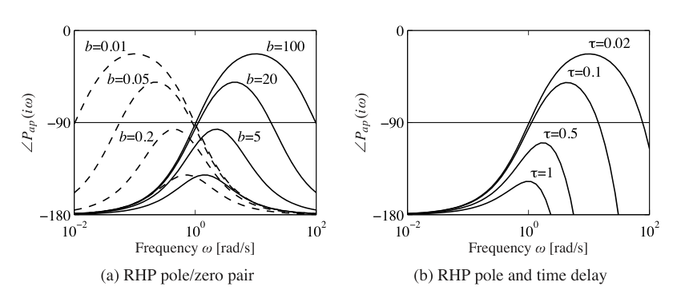
例 11.9 平衡系统
作为同时具有右半平面极点和零点的系统例子，考虑零阻尼平衡系统，其动态为
假设希望使用小车位置作为测量信号来稳定摆。从输入力 \(F\) 到小车位置 \(p\) 的传递函数具有极点
以及零点
使用例 6.7 中的参数，右半平面极点为 \(p=2.68\)，零点为 \(z=2.09\)。式 (11.18) 给出很大的 \(|S(i\omega)|\) 下界，说明不可能鲁棒地控制这个系统。
可以通过改变系统输出来消除右半平面零点。例如，如果选择输出为沿摆杆距离 \(r\) 的某个位置，有 \(y=p-r\sin\theta\)，线性化输出的传递函数变为
如果选择足够大的 \(r\)，使 \(mlr-J_t>0\)，就可以消除右半平面零点，改为得到两个纯虚零点。此时增益交越频率不等式只基于右半平面极点，见例 11.8。如果允许的非最小相位部分相位滞后为 \(\phi_l=45^\circ\)，则增益交越频率必须满足
如果执行器具有足够高带宽，例如比 \(\omega_{gc}\) 高 10 倍，约为 4 Hz，那么就可以在这一频率以下提供鲁棒跟踪。
伯德积分公式
除了提供足够相位裕度来保证鲁棒稳定，典型控制设计还必须满足灵敏度函数，即四函数组上的性能条件。特别是，灵敏度函数
表示扰动衰减，并把跟踪误差 \(e\) 与参考信号联系起来。通常希望在需要小跟踪误差和良好扰动衰减的频率范围内，灵敏度较小。一个基本问题是，能否让 \(S\) 在很宽频率范围内都变小。先看一个例子。
例 11.10 允许小灵敏度的系统
考虑一个闭环系统，由一阶过程和比例控制器组成。令环路传递函数为
其中参数 \(k\) 是控制器增益。灵敏度函数为
因此
这意味着对所有有限频率都有 \(|S(i\omega)|<1\)，并且只要 \(k\) 足够大，就能使任意有限频率处的灵敏度任意小。
例 11.10 中的系统很可惜是例外。该系统的关键特征是，过程的奈奎斯特曲线完全位于右半平面内。这类系统称为无源系统，其传递函数是正实函数。对典型控制系统而言，灵敏度函数存在严重限制。下面的定理来自伯德，它揭示了反馈下性能的限制。
定理 11.1 伯德积分公式。 假设反馈系统环路传递函数 \(L(s)\) 在 \(s\to\infty\) 时比 \(1/s\) 更快趋于零，令 \(S(s)\) 为灵敏度函数。如果环路传递函数在右半平面有极点 \(p_k\)，则灵敏度函数满足
式 (11.19) 表明，控制能够达到的效果存在基本限制，控制设计可以看作在不同频率之间重新分配扰动衰减。特别是，这个方程说明，如果在某些频率处让灵敏度函数变小，就必须在其他频率处让它增大，使 \(\log|S(i\omega)|\) 的积分保持不变。这意味着，在一个频率范围内改善扰动衰减，会在另一个频率范围内变差，这种性质有时称为水床效应。它还说明，具有右半平面开环极点的系统，总体灵敏度大于稳定系统。
式 (11.19) 可看作一种守恒律：如果环路传递函数没有右半平面极点，则公式简化为
图 11.14 给出了这个公式的几何解释，它显示 \(\log|S(i\omega)|\) 随 \(\omega\) 的变化。在频率采用线性刻度时，横轴上方的面积必须等于横轴下方的面积。因此，如果希望在某个频率 \(\omega_{sc}\) 以下减小灵敏度，就必须通过在 \(\omega_{sc}\) 以上增加灵敏度来平衡。控制系统设计可以看作在某些频率处的扰动衰减与其他频率处的扰动放大之间做交换。注意，例 11.10 中系统不满足 \(\lim_{s\to\infty}sL(s)=0\) 的条件，因此积分公式不适用。
互补灵敏度函数也有一个类似式 (11.19) 的结果：
其中求和遍历所有右半平面零点。注意，慢右半平面零点比快右半平面零点更糟，快右半平面极点比慢右半平面极点更糟。
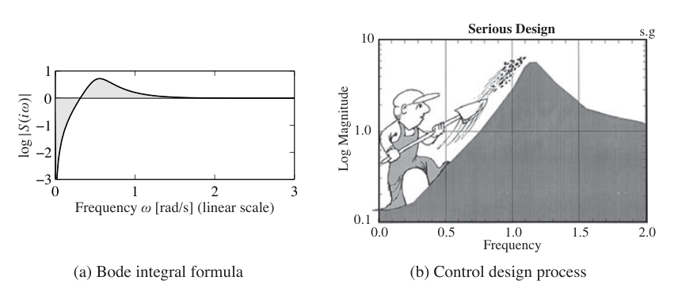
例 11.11 X-29 飞机
作为伯德积分公式应用的例子，我们分析 X-29 飞机的控制系统，见图 11.15a。该飞机具有不同寻常的气动面布局，用于增强机动性。这个分析最初由冈特·斯坦在文章《尊重不稳定性》[185] 中完成，本章开头引文也来自这篇文章。
为了分析该系统，使用一小组参数描述系统关键性质。X-29 的纵向动态与倒立摆动态非常相似，见习题 8.3。特别地，它大约有一对极点 \(p=\pm6\)，以及一个零点 \(z=26\)。稳定俯仰的执行器带宽为 \(\omega_a=40\) rad/s，期望俯仰控制回路带宽为 \(\omega_1=3\) rad/s。由于零点与极点之比只有 4.3，可以预期达到指标可能很困难。
为了评价可达到的性能，寻找一个控制律，使灵敏度函数在期望带宽以下较小，并且在该频率以上不超过 \(M_s\)。由于伯德积分公式，知道 \(M_s\) 在高频处必须大于 1，以平衡低频处较小的灵敏度。因此，问题变成能否找到形如图 11.15b 所示的控制器，并使 \(M_s\) 尽可能小。注意，\(\omega_a\) 以上的灵敏度没有指定，因为该频率处执行器已经没有控制能力。不过，如果过程动态在高频衰减，灵敏度在高频会趋近 1。因此，希望闭环系统在 \(\omega_1\) 以下灵敏度低，在 \(\omega_1\) 与 \(\omega_a\) 之间灵敏度不要太大。
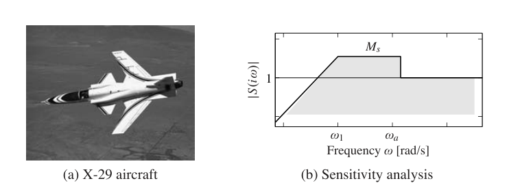
由伯德积分公式可知，无论选择什么控制器，式 (11.19) 都必须成立。假设灵敏度函数为
对应图 11.15b。进一步假设在执行器带宽以上有 \(|L(s)|\approx1/\omega^2\)，则伯德积分变为
计算积分得到
因此
这个公式告诉我们，在给定控制指标下可达到的 \(M_s\) 是多少。特别地，取 \(p=6\)、\(\omega_1=3\)、\(\omega_a=40\) rad/s，得到 \(M_s=1.75\)。这意味着，在 \(\omega_1\) 与 \(\omega_a\) 之间的频率范围内，作用于过程动态输入端的扰动，例如风，对飞机的影响会被放大 1.75 倍。
另一种理解方式是计算这一灵敏度水平对应的相位裕度。由于峰值灵敏度通常发生在交越频率附近，可以计算与 \(M_s=1.75\) 对应的相位裕度。习题 11.14 显示，这个系统可达到的最大相位裕度约为 \(35^\circ\)，低于航空航天系统通常采用的 \(45^\circ\) 设计下限。位于 \(s=26\) 的零点限制了可达到的最大增益交越频率。
伯德公式的推导
现在推导伯德积分公式，即定理 11.1。这是一个技术性小节，需要一些复变函数理论知识，特别是围道积分。假设环路传递函数在右半平面有互异极点 \(s=p_k\)，并且当 \(s\) 很大时，\(L(s)\) 比 \(1/s\) 更快趋于零。
考虑在图 11.16 所示围道上对灵敏度函数
的对数作积分。该围道包围右半平面，但避开 \(s=p_k\) 这些点；在这些点上环路传递函数 \(L(s)=P(s)C(s)\) 有极点，灵敏度函数 \(S(s)\) 有零点。围道方向为逆时针。
沿该围道对 \(\log S(s)\) 积分得到
其中 \(R\) 是右侧大半圆，\(\gamma_k\) 是从虚轴上 \(s=\operatorname{Im}p_k\) 出发并围住极点 \(p_k\) 的小围道。积分为零，因为 \(\log S(s)\) 在围道内部解析。于是
因为 \(\log S(i\omega)\) 的实部是偶函数，虚部是奇函数。此外
由于 \(L(s)\) 在 \(s\) 很大时比 \(1/s\) 更快趋于零，当圆半径趋于无穷时，这个积分趋于零。
接下来考虑积分 \(I_3\)。把围道分为三部分 \(X_+\)、\(\gamma\) 和 \(X_-\)，如图 11.16 所示。于是
围道 \(\gamma\) 是围绕极点 \(p_k\) 的半径为 \(r\) 的小圆。被积函数大小为 \(\log r\) 量级，路径长度为 \(2\pi r\)，因此当 \(r\to0\) 时该积分趋于零。又因为 \(X_-\) 的方向与 \(X_+\) 相反，有
利用 \(|S(s)|=|S(s-2\pi i)|\)，有
从而
令小圆半径趋于零，大圆半径趋于无穷，并把所有右半平面极点 \(p_k\) 的贡献相加，可得
由于复极点成共轭对出现，\(\sum_k \operatorname{Re}p_k=\sum_k p_k\)，于是得到伯德公式 (11.19)。
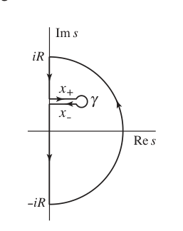
11.6 设计例子
本节给出一个详细例子，说明本章描述的主要设计技术。
例 11.12 矢量推力飞机的横向控制
垂直起降飞机运动控制问题已经在例 2.9 中引入，并在例 11.6 中设计了滚转动态控制器。现在希望控制飞机位置，这个问题要求同时稳定姿态和位置。
为了控制矢量推力飞机的横向动态，采用内外环设计方法，如图 11.17 所示。图中把过程动态和控制器分成两个部分：内环由滚转动态和滚转控制组成，外环由横向位置动态和位置控制器组成。这种分解遵循习题 8.10 中动态的框图表示。
采用的思路是先为内环设计控制器 \(C_i\)，使所得闭环系统 \(H_i\) 对飞机滚转角提供快速准确控制。然后为横向位置设计控制器。此时近似认为滚转角可以作为控制位置动态的直接输入。在滚转控制器动态相对期望横向位置控制带宽足够快的假设下，就可以把内环和外环控制器组合成整个系统的单个控制器。对整个系统的性能指标是：横向位置稳态误差为零，带宽约为 1 rad/s，相位裕度为 \(45^\circ\)。
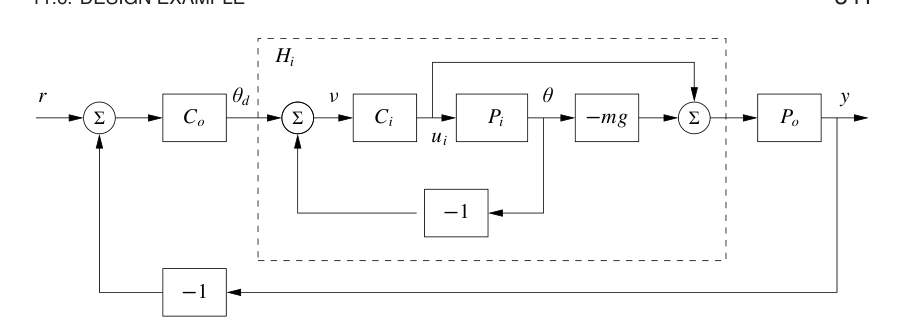
对内环，设计指标是为外环提供准确而快速的滚转控制。内环动态为
选择期望带宽为 10 rad/s，也就是外环带宽的 10 倍，并要求低频误差不超过 5%。之前在例 11.6 中设计的超前补偿器满足这个指标，因此选择
系统闭环动态满足
图 11.18 给出了这个传递函数的幅值。可以看到，在 10 rad/s 以下，\(H_i\approx -mg=39.2\) 是一个很好的近似。
为了设计外环控制器，假设内环滚转控制是完美的，因此可以把 \(\theta_d\) 作为横向动态输入。根据习题 8.10 中的框图，外环动态可写为
这里用 \(H_i(0)\) 代替 \(H_i(s)\)，反映了内环最终会跟踪命令输入这一近似。当然，这个近似未必有效，因此完成设计后必须验证。
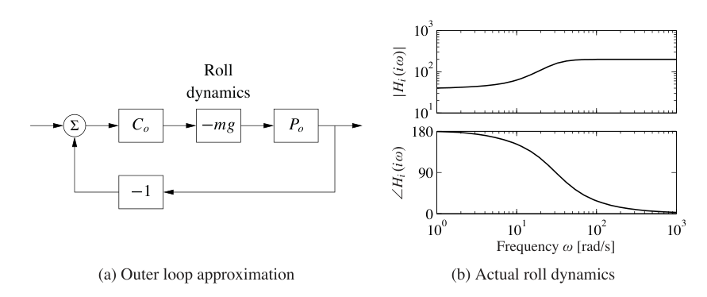
现在的控制目标是设计一个控制器，使 \(x\) 具有零稳态误差，并且带宽为 1 rad/s。外环过程动态由二阶积分器给出，可以再次使用简单超前补偿器满足指标。还选择设计使外环的环路传递函数在 \(\omega>10\) rad/s 时满足 \(|L_o|<0.1\)，这样就可以忽略 \(H_i\) 动态。选择控制器形式为
其中负号用于抵消过程动态中的负号。为了确定极点位置，注意相位超前大约在 \(b/10\) 处趋于平缓。希望在交越处有相位超前，并希望交越频率为 \(\omega_{gc}=1\) rad/s，因此取 \(b_o=10\)。为了保证足够相位超前，必须选择 \(a_o\) 使
这意味着 \(a_o\) 应在 0.1 到 1 之间。取 \(a_o=0.3\)。最后，需要设定系统增益，使交越处环路增益幅值为 1。简单计算表明，\(k_o=2\) 满足这一目标。因此最终外环控制器为
最后，把内环和外环控制器组合起来，并验证系统具有期望闭环性能。图 11.19 给出了对应图 11.17 的内外环组合传递函数的伯德图和奈奎斯特图，可以看到指标得到满足。图 11.20 还给出了四函数组，可以看到所有输入输出之间的传递函数都合理。由于控制器没有积分作用，负载扰动灵敏度 \(PS\) 在低频处较大。
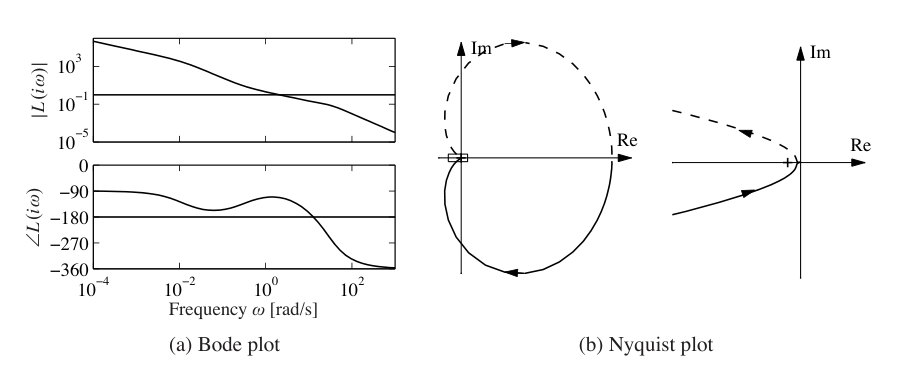
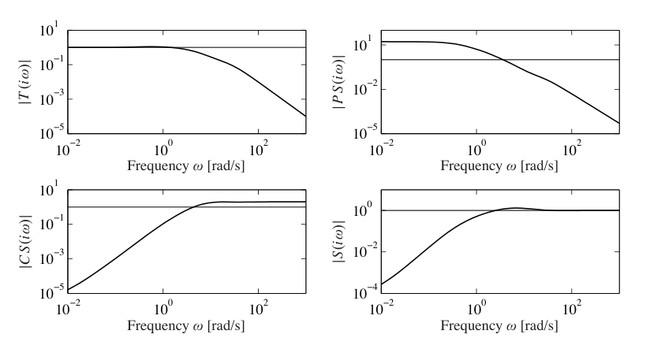
把动态分成内环和外环，是许多控制应用中的常见做法，并且能让复杂系统设计更简单。事实上，对本例研究的飞机动态而言，直接从横向位置 \(x\) 到输入 \(u_1\) 设计控制器非常困难。额外测量 \(\theta\) 大大简化了设计，因为问题可以拆成更简单的部分。
11.7 延伸阅读
通过环路整形进行设计，是控制早期发展中的关键内容之一，并发展出了系统化设计方法，见 James、Nichols 和 Phillips [110]，Chestnut 和 Mayer [51]，Truxal [194] 以及 Thaler [191]。Franklin、Powell 和 Emami-Naeini [79]，Dorf 和 Bishop [61]，Kuo 和 Golnaraghi [133] 以及 Ogata [162] 等标准教材也讨论了环路整形。二自由度系统由 Horowitz [102] 发展，他也讨论了右半平面极点和零点的限制。关于限制的基本结果见 伯德 [40]；Goodwin、Graebe 和 Salgado [88] 给出了较新的介绍。第 11.5 节的处理基于 [14]。早期许多工作基于环路传递函数；灵敏度函数的重要性在 20 世纪 80 年代的发展中凸显出来，并最终形成 \(H_\infty\) 设计方法。Doyle、Francis 和 Tannenbaum [64] 以及 Zhou、Doyle 和 Glover [209] 的教材给出了紧凑介绍。McFarlane 和 Glover [150] 以及 Vinnicombe [196] 把环路整形与鲁棒控制理论结合起来。Maciejowski [141] 以及 Goodwin、Graebe 和 Salgado [88] 对控制系统设计作了全面处理。
习题
11.1 考虑图 11.1 中的系统。列出所有由下列传递函数联系起来的信号对：
11.2 考虑例 11.1 中的系统。选择参数 \(a=-1\)，并对 \(k=0.2\) 和 \(k=5\) 的控制器，计算四函数组中所有传递函数的时域响应和频率响应。
11.3 图 11.1 和图 11.2 的等价性。考虑图 11.1 中的系统，令感兴趣输出为 \(z=(\eta,\nu)\)，主要扰动为 \(w=(n,d)\)。证明该系统可以由图 11.2 表示，并给出矩阵传递函数 \(P\) 和 \(C\)。验证闭环传递函数 \(H_{zw}\) 给出四函数组。
11.4 考虑式 (2.14) 给出的弹簧质量系统，其传递函数为
设计一个前馈补偿器，使响应具有临界阻尼，即 \(\zeta=1\)。
11.5 反馈和前馈的灵敏度。考虑图 11.1 中的系统，令 \(G_{yr}\) 为测量信号 \(y\) 与参考 \(r\) 之间的传递函数。证明 \(G_{yr}\) 关于前馈和反馈传递函数 \(F\)、\(C\) 的灵敏度为
11.6 二自由度控制器的等价性。证明如果
则图 11.1 和图 11.3 中的系统对命令信号给出相同响应。
11.7 扰动衰减。考虑图 11.1 中的反馈系统。假设参考信号为常数。令 \(y_{ol}\) 为没有反馈时的测量输出，\(y_{cl}\) 为有反馈时的输出。证明
其中 \(S\) 是灵敏度函数。
11.8 通过反馈降低扰动。考虑这样一个问题：已经测量某个输出变量，用于估计反馈扰动衰减的潜力。假设分析表明，可以设计一个闭环系统，其灵敏度函数为
当测得扰动为
时，估计可能的扰动降低程度。
11.9 证明习题 11.4 中系统的噪声对控制信号的影响可近似为
并且 \(|CS(i\omega)|\) 的最大值为 \(k_d/T_f\)，发生在
11.10 低频正弦扰动衰减。积分作用可以消除常值扰动并减小低频扰动，因为控制器在零频处具有无穷增益。类似思想也可以用于降低已知频率 \(\omega_0\) 的正弦扰动影响，使用控制器
这个控制器在频率 \(\omega_0\) 处的增益为
因此可通过选择较小 \(\zeta\) 使其很大。假设过程传递函数为 \(P(s)=1/s\)。确定环路传递函数的伯德图并仿真系统。与 PI 控制结果比较。
11.11 考虑超前补偿器
它的零频增益为 \(C(0)=1\)，高频增益为 \(C(\infty)=k\)。证明为了给出相位超前 \(\phi\)，所需增益为
并且
11.12 考虑环路传递函数为
的过程，其中 \(z>0\)、\(p>0\)。证明当
时系统稳定，并且最大稳定裕度
在
处取得。确定使稳定裕度 \(s_m=2/3\) 的极点零点比。
11.13 证明式 (11.18) 给出的不等式。提示：使用最大模原理。
11.14 相位裕度公式。证明在增益交越频率处，相位裕度与灵敏度函数值之间的关系为
11.15 使用视觉反馈稳定倒立摆。考虑基于视频摄像机视觉反馈稳定倒立摆，摄像机帧率为 50 Hz。令摆的有效长度为 \(l\)。使用增益交越频率不等式，确定如果希望相位滞后 \(\phi_l\) 不超过 \(90^\circ\)，可稳定摆的最小长度。
11.16 后轮转向自行车。考虑式 (3.5) 中的简单自行车模型，它有一个右半平面极点。该模型也适用于后轮转向自行车，但此时速度符号反转，系统还会有一个右半平面零点。使用习题 11.12 的结果，给出允许稳定裕度为 \(s_m\) 的控制器存在时，物理参数必须满足的条件。
11.17 证明互补灵敏度公式 (11.20)。